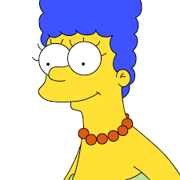
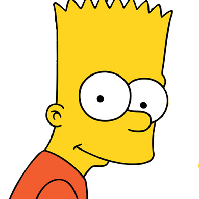

Los Simpsons
-
Homero
Homero Jay Simpson es un personaje ficticio protagonista de la serie de televisión de dibujos animados Los Simpson. Es el padre de la familia protagonista y uno de los personajes centrales y más importantes de la serie. Fue creado por el dibujante Matt Groening e hizo su debut en televisión el 19 de abril de 1987, en el corto Good Night del programa El show de Tracey Ullman. Su segundo nombre es un juego de palabras; durante muchas temporadas no se supo qué había detrás de la J hasta que en el capítulo «D'oh-in' In the Wind» descubre que su segundo nombre es Jay (nombre en inglés de la letra j); de este modo, cuando Homer pronuncia en inglés su propio nombre, no se distingue si da la letra inicial del segundo nombre o este al completo.
-
Marge
Marjorie "Marge" Bouvier Simpson, es un personaje ficticio de la serie de televisión de dibujos animados Los Simpson. Es la esposa de Homer Simpson y madre de los tres hijos que ha tenido de esta unión amorosa: Bart, Lisa y Maggie. Ella, junto al resto de su familia, conforman el elenco de personajes protagonistas de Los Simpson, su presencia ha demostrado ser fundamental para mantener la familia unida.
-
Bart
Bartolomeo Jojo Simpson es uno de los personajes ficticios protagonistas de la serie de televisión de dibujos animados Los Simpson. Bart tiene 10 años y es el primogénito, y único hijo varón de Homero y Marge Simpson. Es el hermano mayor de Lisa y Maggie.
-
Lisa

Lisa Marie Simpson 3 4 es un personaje de la serie de televisión de dibujos animados Los Simpson. Es la hija mediana de Homer y Marge Simpson, y hermana de Bart y Maggie. Goza de notable protagonismo y complejidad en la serie. Lisa fue concebida por el caricaturista Matt Groening y debutó en la televisión el 19 de abril de 1987, en el cortometraje de dibujos animados titulado Good Night del programa de variedades El show de Tracey Ullman.